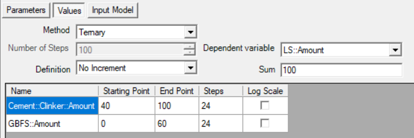
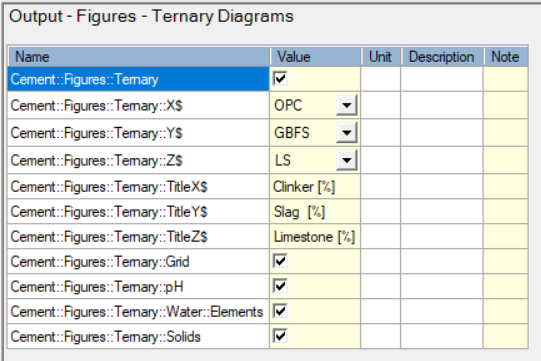
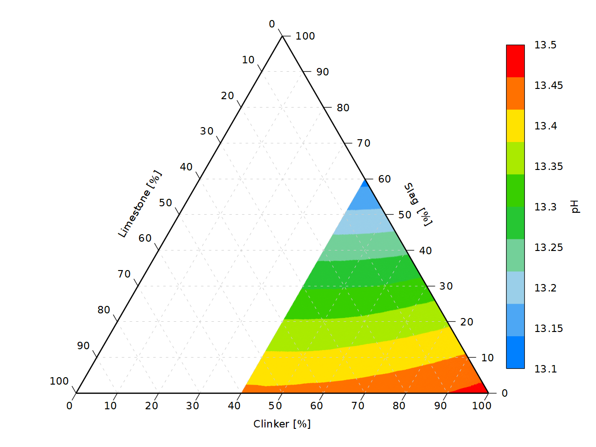
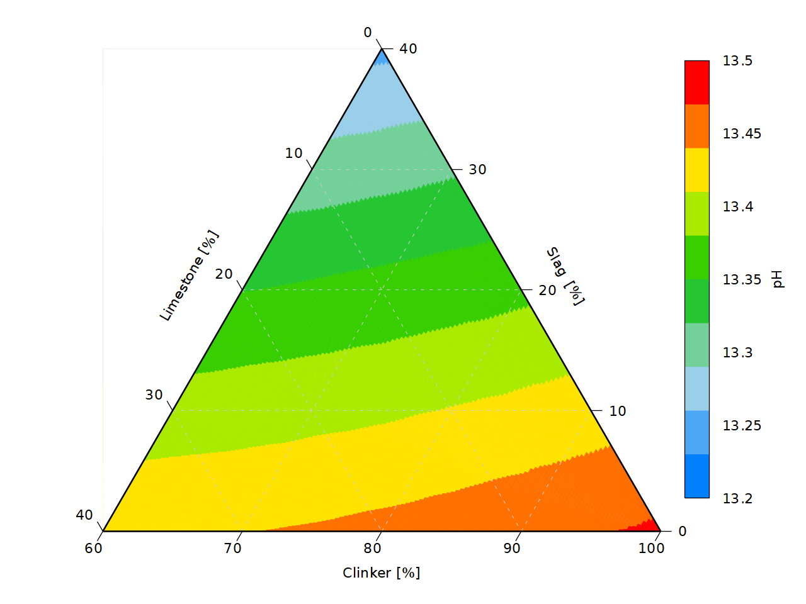
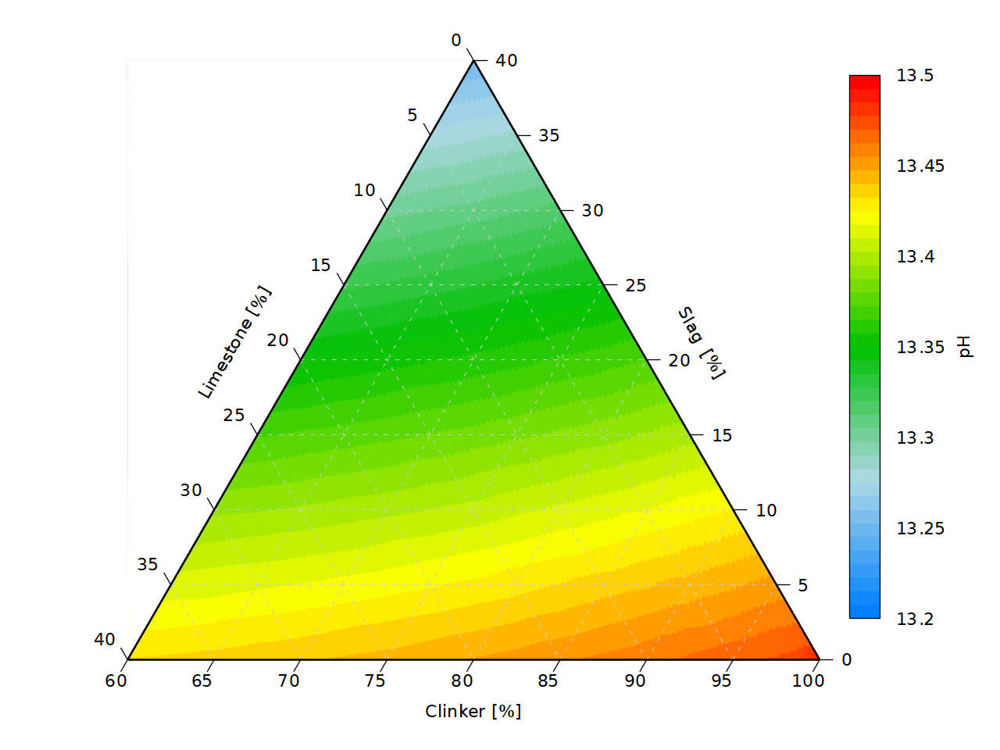
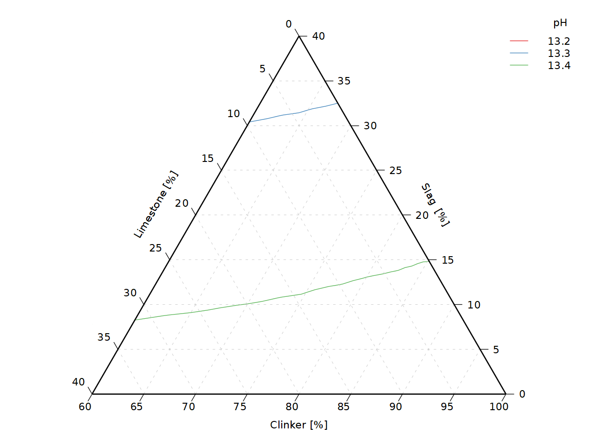
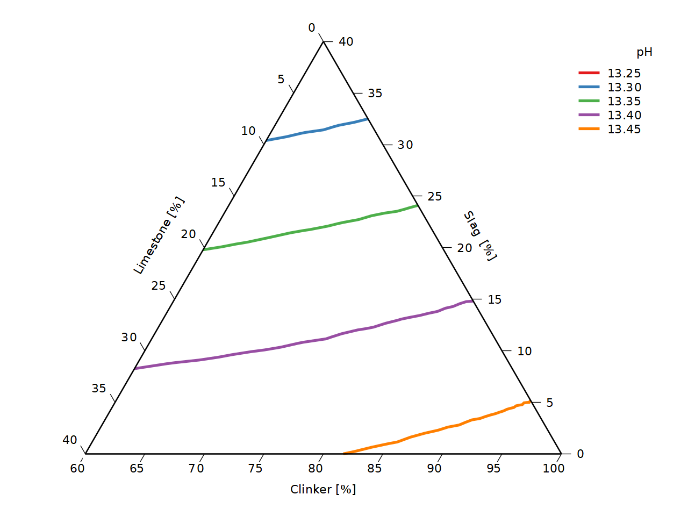
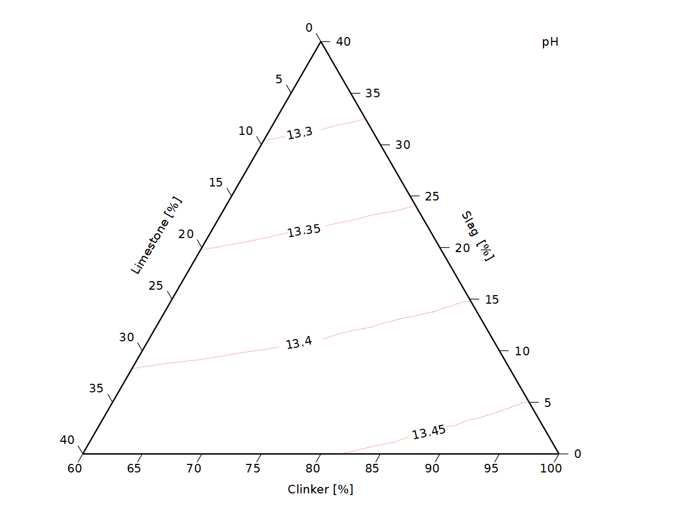
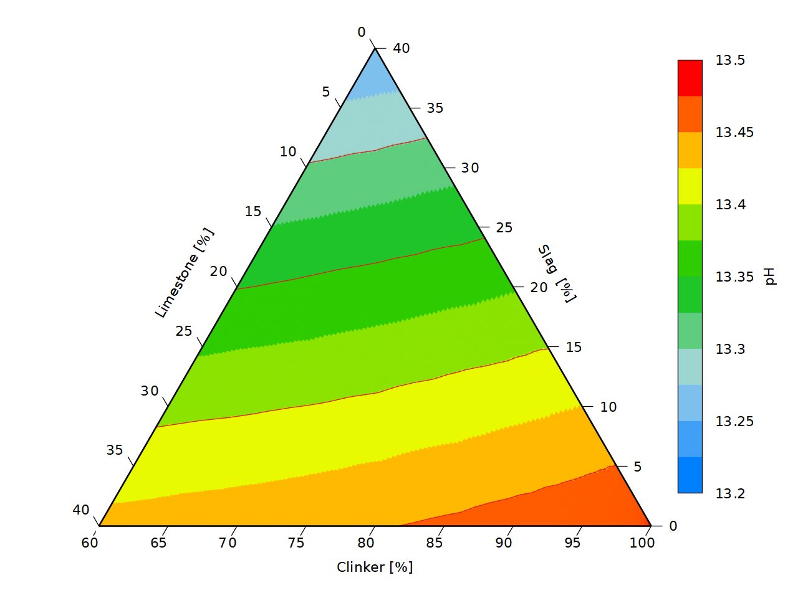
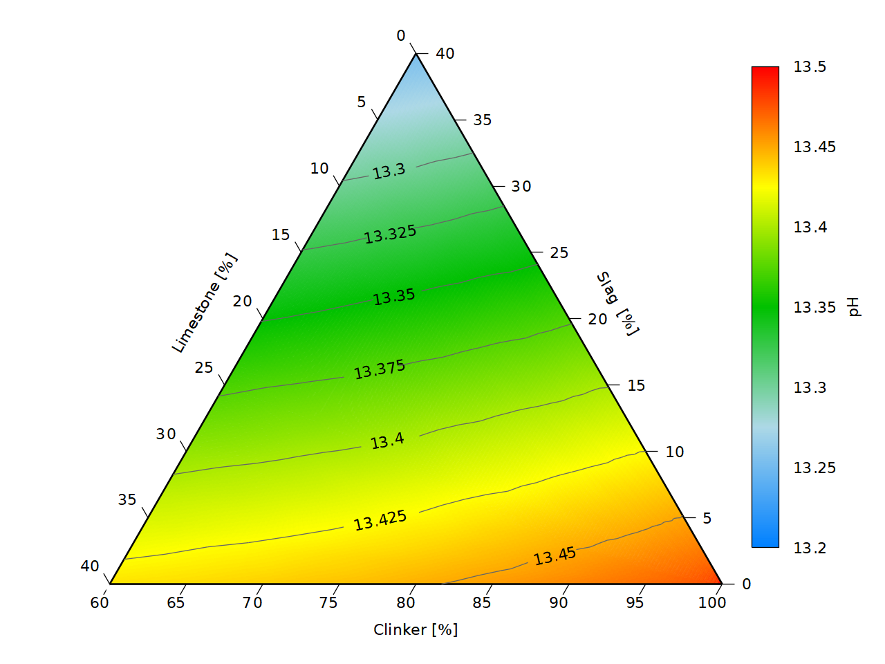

Tutorial - Blending of OPC with GBFS and SF in variable amounts (ternary)
Tutorial Blending of OPC with GFBS and SF in variable amounts (ternary)
Description
Calculate the hydrates assemblage and pore water composition of the hydration of 100 g CEM-I with a water/cement ratio of 0.5 and at a temperature of 25°C when OPC is replaced by GBFS up to 60% and LS also up to 60%. The CEM I oxide composition is taken from the Lothenbach and Winnefeld (2006) (their table 1); the GBFS oxide composition from Adu-Amankwah et al. (2017). Calculations are done in the Ca-Si-Al/Fe-S-Mg-C-Na-K system.
You will learn to
Calculate equilibrium phases in a ternary blended system
Template - Hydrates_10_Blending_general
Depends on
Tutorial - Create Managed Project with Cement Module
Tutorial - Blending OPC with 0-60% GBFS (reaction path)
Step 1 – Create the simulation from the template to blend materials
Go to Project Manager 
Select the project in the bottom panel
Go to Templates tab in the top panel
Select the template “Hydrates_10_Blending_general”
Click the “Create new from template” button 
The Metadata dialogue window opens.
Define the name of the simulation (TB_Ternary)
Optionally add description (Blending of OPC with GFBS and SF in variable amounts (ternary))
Click OK
The Project Manager is active again.
Select the simulation (TB_Ternary) and click Select
Step 2 – Create the reaction path of blending
Go to Global Definitions
Go to Global Variables
Select the first record (default case)
Change the case name in the Name column (OPC-GFBS-LS)
Optionally adapt the description in the Description column.
Click on Select Mode ( ) icon
) icon
Select the Parameters panel
Select Cement::Clinker::Amount
Select GBFS::Amount
Select
Select the Values panel
In this panel, the method (to obtain different parameter values) and the options relevant to the method are available.

Select Ternay in Method box (See Ternary in online HPx manual)
Set the Sum to 100
Select the variable that is calculated from the other two variables in the Dependent variable drop-down box (LS::Amount)
Set the starting point, end point and the number of steps for the two other variables.
No changes needed in the Input Model panel
Step 3 – Set Model and Output Options
Go to the input table via the icon 
Choose model 15-Ca Si Al/Fe S Mg C Na K Cl in the Cement System group of the Cement Model tab
Choose the s_s_ideal mdoel for AFT (Model::AFT_s_s$)
Go to the Output Tab
Go to the Output - Figures - Ternary Diagrams Group

Check Cement::Figures::Ternary
Select the variables for the 3 axis:
Cement::Figures::Ternary::X$ OPC
Cement::Figures::Ternary::Y$ GBFS
Cement::Figures::Ternary::Z$ LS
and add the axis labels:
Cement::Figures::Ternary::TitleX$ Clinker [%]
Cement::Figures::Ternary::TitleY$ Slag [%]
Cement::Figures::Ternary::TitleZ$ Limestone [%]
Run 
Step 4 – Check Log and Plots
Go to the Graph Workspace 
The plots under "DefaultGraphs" are not relevant for the ternary blended cements.
The ternary plots are under "Default Ternary Graphs" in several groups.
The graph below shows the ternary pH graph.

The default graph shows the ternary diagram over the full range (0-100%) for each axis and as a map. There are options to change the graph appearance - in this version, this is only possible via script definitions as explained in Ternary graphs - via gnuplot scripting. Some aspects are illustrated below.
Extra - Adapting Ternary Graphs
In a first step, the scale of the axis are adapted to the relevant area (see Scale of Axes) - note that only an equilateral triangle subregion is allowed (read gives meaningful graphs).
Go to the Edit Graph Tool  adapted(See HPx manual - Edit Graph Tool)
adapted(See HPx manual - Edit Graph Tool)
Go to the Scripting Panel 
Type following text
TERNARY_X_MIN = 60
TERNARY_Y_MIN = 0
TERNARY_Z_MIN = 0
L = 100 - TERNARY_X_MIN - TERNARY_Y_MIN - TERNARY_Z_MIN
TERNARY_X_MAX = TERNARY_X_MIN + L
TERNARY_Y_MAX = TERNARY_Y_MIN + L
TERNARY_Z_MAX = TERNARY_Z_MIN + L
TERNARY_TIC_LENGTH = 2.0*L/100
Replot

To increase the number of tics on the axis (see Scale of Axes), type the following text:
TERNARY_X_STEP = 5
TERNARY_Y_STEP = 5
TERNARY_Z_STEP = 5
Replot

To increase the number of colors, use the gnuplot command (see gnuplot - set palette, left figure below):
set palette maxcolors 40
Increase to a larger number, to obtain a smoot surface (right figure below):

Alternatively, ternary graphs can be made with contours (without or with contour labels) with or without a coloured background.
Right click the plot name (pH) gives the different available graph types.

The default graph type is a filled ternary diagram.
Ternary diagram with contour lines
Selecting Contours generates a ternary diagram with contour lines only (the graphs below are made with comments controlling the axis scales, and axis tics as described above).

Editing is possible with a combination of specific commands
TERNARY_NO_GRID = 1
TERNARY_CONTOUR_WIDTH = 2
respectively, to have no grid at the background and the set the width of the contour lines, and gnuplot commands (see gnuplot - cntrparam)
set cntrparam levels incremental 13.25, 0.05, 13.475
to define the contour levels, both in the scripting panel.

Ternary diagram with contour lines and labels
Right click the plot name (pH) and select Contour with labels.
The plot below is made with following settings (variables are for manipulating the ternary diagram; set commands are gnuplot commands):
TERNARY_NO_GRID = 1
TERNARY_CONTOUR_WIDTH = 2
set cntrparam levels incremental 13.25,0.05,13.475
TERNARY_CONTOUR_LT = 5
set linetype 5 lc rgb "red" dt "."

Filled ternary graph with contours
Right click the plot name (pH) and select Filled and contours.
The plot below is made with following settings (variables are for manipulating the ternary diagram; set commands are gnuplot commands):
TERNARY_NO_GRID = 1
set cntrparam levels incremental 13.25,0.05,13.475
set palette maxcolors 12

Filled ternary graph with labelled contours
Right click the plot name (pH) and select Filled and contours with labels.
The plot below is made with following settings (variables are for manipulating the ternary diagram; set commands are gnuplot commands):
TERNARY_NO_GRID = 1
TERNARY_NO_GRID = 1
set cntrparam levels incremental 13.30,0.025,13.475
set palette maxcolors 256
TERNARY_CONTOUR_LT = 1
set linetype 1 lc rgb "gray40"

END TB_Ternary - Blending of OPC with GFBS and SF in variable amounts (ternary)